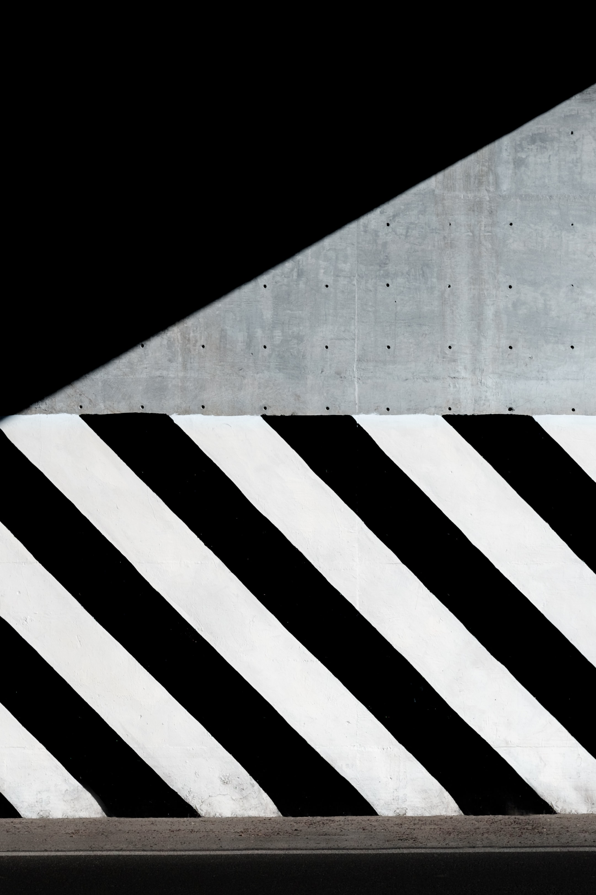
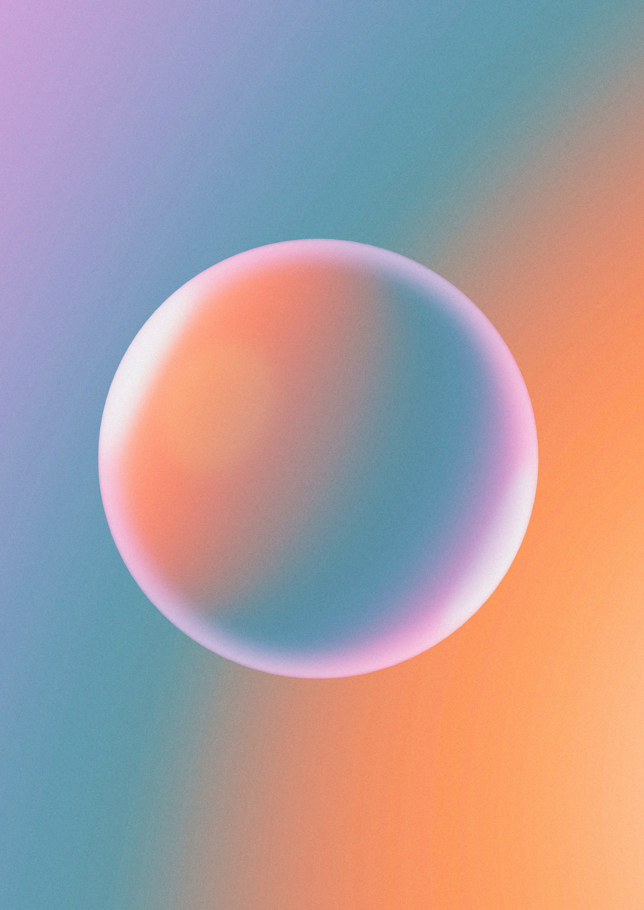

確保照片在正方形中的顯示方式：
當照片的高度小於寬度時，照片的高度會等於正方形的高度進行顯示，並在滑鼠滑入時保持正方形尺寸不變，同時放大圖片。
當照片的寬度小於高度時，照片的寬度會等於正方形的寬度進行顯示，並在滑鼠滑入時保持正方形尺寸不變，同時放大圖片。
Card Title 1
Date 1
Card Description 1

Card Title 2
Date 2
Card Description 2
Card Title 3
Date 3
Card Description 3

Card Title 4
Date 4
Card Description 4
Card Title 5
Date 5
Card Description 5
要在卡片容器的左右邊界添加漸變柔化效果，您可以使用以下 CSS 代碼：
css
Copy code
.card-container::before,
.card-container::after {
content: '';
position: absolute;
top: 0;
bottom: 0;
width: 50px;
pointer-events: none;
background-image: linear-gradient(to right, rgba(245, 245, 245, 1), rgba(245, 245, 245, 0));
z-index: 1;
}
.card-container::after {
right: 0;
transform: rotate(180deg);
}
這段 CSS 代碼首先為 .card-container 容器添加了兩個偽元素 ::before 和 ::after，並給它們設置了絕對定位。這使得偽元素能夠覆蓋在卡片容器的左右邊界。
background-image 屬性用於為偽元素添加線性漸變背景，從左側的完全不透明（rgba(245, 245, 245, 1)）漸變至右側的完全透明（rgba(245, 245, 245, 0)）。
pointer-events: none; 屬性用於確保用戶可以與被偽元素覆蓋的卡片互動，不受偽元素的影響。
最後，.card-container::after 的 right: 0; 和 transform: rotate(180deg); 屬性將偽元素放置在卡片容器的右邊界，並翻轉漸變效果。
將此 CSS 代碼添加到您的現有代碼中，即可實現在卡片容器的左右邊界添加漸變柔化效果。